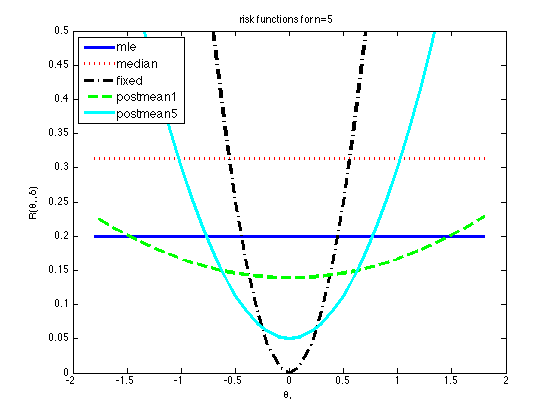
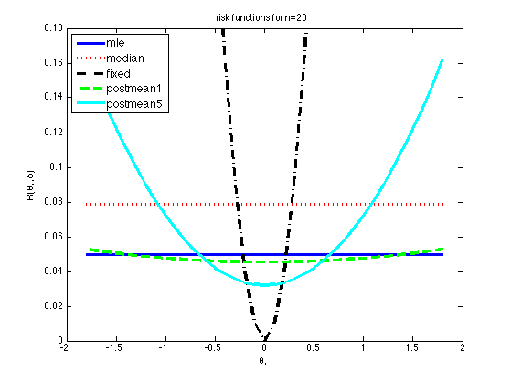

Reproduce Figure B.1 p447 from Bernardo94
ns = [5 20];
[styles, colors, symbols] = plotColors;
for ni=1:length(ns)
n = ns(ni);
mus = -1.8:0.1:1.8;
M = length(mus);
n0 = 1;
n0B = 5;
mu0 = 0;
r1 = (1/n) * ones(1,M);
r2 = (pi/(2*n)) * ones(1,M);
r3 = (mus-mu0).^2;
r4 = (n+n0)^(-2) * (n + n0^2*(mu0-mus).^2);
r5 = (n+n0B)^(-2) * (n + n0B^2*(mu0-mus).^2);
legendStr = {'mle','median','fixed','postmean1', 'postmean5'};
r = {r1, r2, r3, r4, r5};
figure;
for i=1:5
plot(mus, r{i}, [styles{i}, colors(i)], 'linewidth', 3);
hold on
end
legend(legendStr,'fontsize', 12, 'Location','NorthWest');
if ni==1
set(gca,'ylim',[0 0.5])
else
set(gca,'ylim',[0 0.18])
end
xlabel('\theta_*')
ylabel('R(\theta_*,\delta)')
title(sprintf('risk functions for n=%d', n))
printPmtkFigure(sprintf('riskFnGaussN%d', n))
end
 